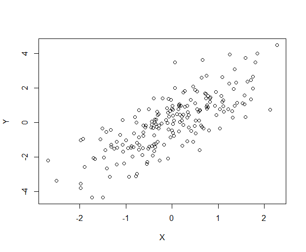
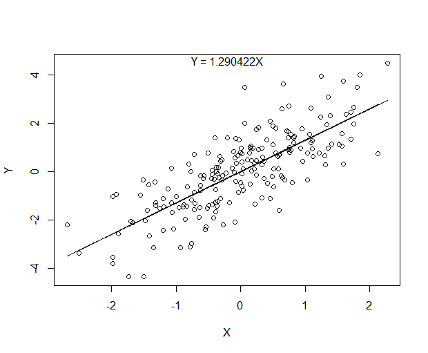

(Very brief) intro to linear regression
Introduction:
In this first post, we are going to discuss about the linear regression model which is simple and effective for many situations. This model is useful due to the following reasons.
Simple to understand.
Problem can be solved easily.
Work in many situations.
Theory:
Let suppose, we have the following dataset,
\[
\begin{align}
X_{N} &= \{\hat{X}_1, \hat{X}_2, .., \hat{X}_N\} \\
Y_{N} &= \{y_1, y_2, .., y_N\}
\end{align}
\]
Where,
\[
\hat{X}_i = (x_1, x_2, ..., x_P)^T \ \forall i \in \{1,..,N\}
\]
Note: $\hat{X}$ is a P dimensional vector and $y$ is a continuous value.
The goal here is to create a model that can predict the outcome $f(x)$ based on the given input $x$. The linear regression model can be defined as follow.
\[
f(X) = \beta_1 X_1 + \beta_2 X_2 + ... \beta_N X_N = X^T\beta + \epsilon \tag{1}
\]
The upcoming question is how do we know that the model is good? We need some kind of information that could be measurable and non-computationally expensive. Here is one of it.
\[
Loss\ =\ E[(Y - f(X))^2] =\ (Y - X\beta)^T (Y - X\beta) \tag{2}
\]
The optimal solution occurs when the loss function is at lowest. In other words, the predicted result is close to the real value. Therefore, we can find the $\beta$ based on the above loss function as follow,
\[
\begin{align}
\frac{\partial Loss}{\partial \beta} &= -2X^T(Y-X\beta) = 0 \\
\therefore \hat{\beta} &= (X^TX)^{-1} X^TY \tag{3}
\end{align}
\]
Example: single dimensional case
Since this is a brief introduction, we will apply idea above on one-dimensional data. With R, we will generate sample data as follow.
X <- rnorm(n = 200, mean = 0, sd = 1)
Y <- 1.23123*X + rnorm(200) # True model
plot(x = X, y = Y, xlab = 'X', ylab = 'Y')

Next, we will evaluate the $\beta$ as explained in the previous section as follow.
beta <- solve(t(X) %*% X) %*% (t(X) %*% Y)
The solution will be different based on the generated dataset. In my case, $\beta = 1.290422$, which is pretty close to the real value, and here is the prediction result.
